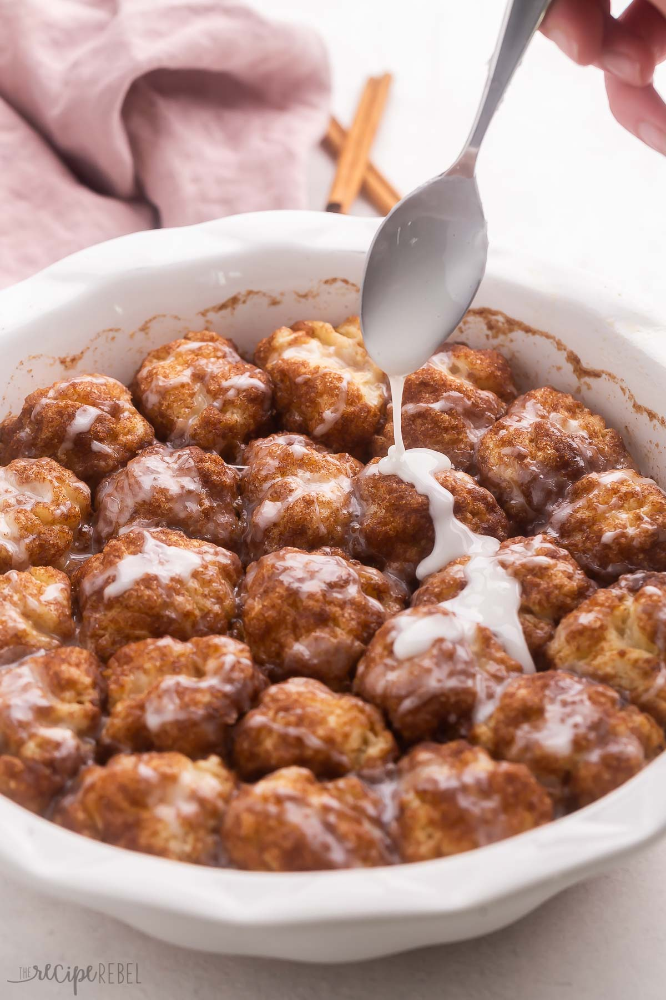

Cinnamon Roll Bites
Back to home page

Description
As someone who greatly enjoys cinnamon, if you're like me, you can't miss out on this recipe. They taste just like cinnamon rolls, and are an excellent choice for breakfast as well as for dessert.
This recipe should give you a total of 10 servings.
Ingredients
Biscuit Dough
- 2 cups flour (whole wheat, all purpose, or a mix)
- 1 tbsp baking powder
- ¼ tsp salt
- ½ cup cold butter
- ¾-1 cup cold milk
Cinnamon Sugar Coating
- 3 tbsp brown sugar
- 2 tbsp granulated sugar
- 1 tsp cinnamon
- ½ cup butter, melted
Glaze
- ⅓ cup icing sugar
- 1-2 tbsp milk just enough to bring the glaze together
Preparation
- In a large bowl, combine flour, baking powder, and salt.
- Cut the butter into cubes and add them to the bowl. Cut in the butter with a pastry cutter or fork until butter is in pea-sized pieces.
- Stir in the milk gradually, adding just enough so that the dough comes together. Bring the dough together in a ball with your hands (if you accidentally add too much milk and it becomes sticky, just add a little more flour).
- Preheat oven to 350 degrees F. Lightly grease a 10-inch pie plate or baking dish, or line it with a piece of parchment paper.
- In a medium bowl, combine brown sugar, granulated sugar, and cinnamon. Roll the dough into 1″ balls. Dip the balls in the remaining melted butter, coat them in the cinnamon sugar mixture, and place them in the pie plate.
- Drizzle the melted butter over the dough balls in the pan. Bake for 20-25 minutes until the biscuits are cooked and the butter/sugar mixture is bubbling in the bottom of the pan.
- Make the glaze by combining the icing sugar and milk in a small mixing bowl.
- Remove the balls from the oven and allow them to cool slightly before drizzling the glaze over the balls. Serve hot or cold.
- Enjoy!